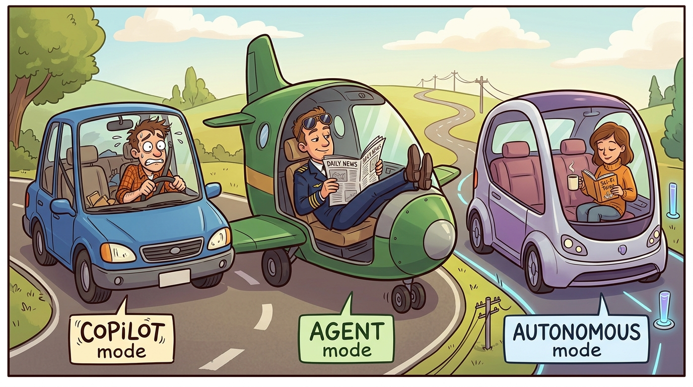
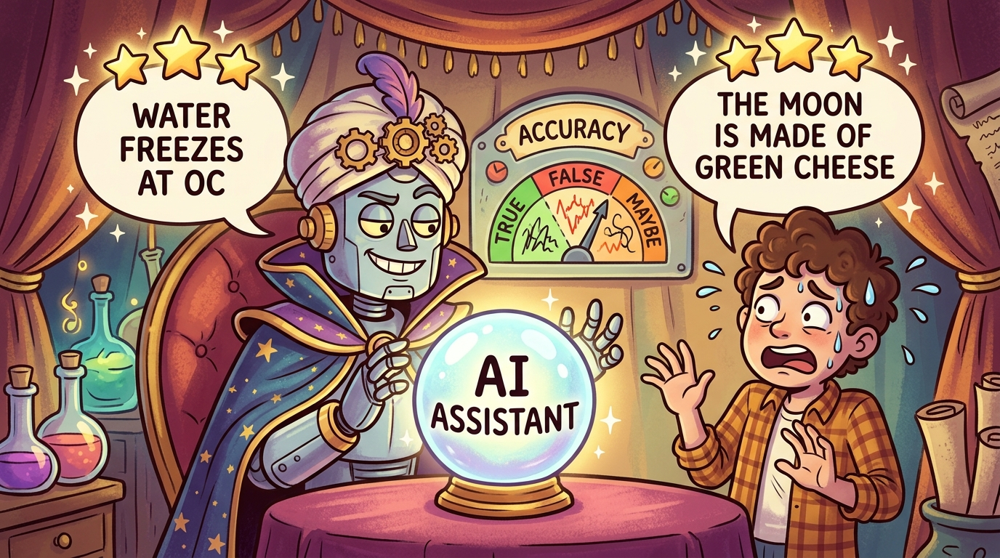

Objective: Develop a shared vocabulary for AI capabilities and limitations that your entire team can use when making product decisions.
"The model can do amazing things, but it cannot do everything. Knowing the difference is the key to building products that work."
The Pragmatic AI Product Guide
2.1 Foundation Model Capabilities and Limits
Foundation models have transformed what AI can do, but they have specific boundaries that product teams must understand. This section provides a practical framework for thinking about what AI can reliably do, organized around the capabilities that matter most for product development.
The Reliability Spectrum
Not all AI capabilities are created equal. Some tasks AI performs reliably, others it handles inconsistently, and some it cannot do at all without significant scaffolding. Understanding this spectrum is essential for making good product decisions.
In the reliable zone, AI can summarize documents within its context window, classify text with clear categories, translate between major languages, complete code within a single file, and extract structured data from unstructured text.

In the moderate reliability zone, AI performance drops with complexity: multi-step reasoning becomes less reliable, code requiring external API calls can fail, questions about recent events may have outdated answers, creative writing with specific constraints varies, and mathematical calculations depend heavily on the model.
In the unreliable zone, AI requires significant scaffolding: precise factual recall is hallucination-prone, long-horizon planning exceeds current capabilities, real-time information retrieval needs external tools, benchmarking against specific ground truth requires careful validation, and consistent formatting across many generations remains challenging.
What Foundation Models Do Reliably
Foundation models are exceptionally good at recognizing patterns and transforming inputs into outputs. This is the core capability that makes them useful: given text in one format, they can produce text in another format. This includes summarizing long documents into concise versions, extracting key information and structuring it, translating between languages while preserving meaning, classifying text into predefined categories, and generating variations of existing content.
Beyond pattern recognition, foundation models demonstrate strong natural language understanding capabilities. They can determine the intent behind user queries even when phrased unclearly, follow complex instructions that specify behavior through examples, maintain coherence across long conversations, and understand implied meaning, sarcasm, and ambiguity. Modern foundation models can also write, read, and modify code with reasonable reliability, especially for common patterns and well-documented APIs. They can generate boilerplate code from specifications, explain what existing code does, suggest fixes for bugs when given error messages, translate code between programming languages, and complete partial code based on context.
The Limits That Matter for Products
Understanding AI limitations is just as important as understanding capabilities. Several fundamental limits affect how you should design AI products.
Knowledge Cutoffs and Retrieval Limitations
Foundation models have a fixed knowledge cutoff. They cannot answer questions about events after their training data was collected, and they may produce outdated information for questions about historical events if their training data is incomplete or contains errors.
HealthMetrics initially built a clinical decision support feature assuming the AI had current medical knowledge. During testing, they discovered the model would sometimes recommend treatment protocols that had been superseded. The model was not "wrong" in a general sense, but it lacked recent updates to clinical guidelines. This led HealthMetrics to implement a mandatory RAG pipeline connecting to a medical literature database that is updated in real-time, ensuring recommendations reflect current best practices.
Hallucination: The Persistent Challenge
Foundation models can generate plausible-sounding but incorrect information. This phenomenon, called hallucination, occurs because models are optimized to produce coherent text, not necessarily accurate text. The model learns patterns from training data and generates outputs that match those patterns, even when the underlying facts are wrong.
Hallucination is not a bug that can be fixed with better engineering. It is a fundamental characteristic of how transformer-based language models work. The model generates the most likely continuation of the input, not the most accurate response. For product teams, this means designing systems that assume hallucination will occur and mitigate its impact.
Teams should address hallucination at multiple levels. First, prompt design structures prompts to encourage factual responses and explicit uncertainty. Second, retrieval-augmented generation grounds model responses in retrieved documents. Third, output validation uses secondary models or rules to check outputs. Fourth, human review routes sensitive outputs through human verification. Fifth, user interface design creates UIs that help users identify potential errors.
Foundation models can only process a limited amount of text at once because their context window limits the length of documents that can be summarized, the amount of relevant context that can be included in a prompt, and the complexity of multi-step reasoning before the model forgets early context. Current frontier models support context windows of 200K to 1M tokens, though performance degrades for information placed in the middle of very long contexts due to the lost in the middle problem. For product design, this means chunking large documents and designing retrieval systems that surface the most relevant content first.
Inconsistent Reliability Across Domains
AI reliability varies significantly across domains. A model that reliably handles general conversation may struggle with specialized domains like medical terminology, legal language, or technical code from specific frameworks.
DataForge initially deployed their ETL pipeline generator using a general-purpose foundation model. The model handled general Python programming reliably, but when users asked it to generate pipelines using company-specific coding conventions or internal frameworks, reliability dropped significantly. DataForge solved this by fine-tuning the model on their enterprise codebases, which improved domain-specific reliability from 40% to 85% acceptance rates.
The Calibration Problem
Foundation models often express high confidence even when they are wrong, and moderate confidence even when they are correct. This miscalibration between confidence and accuracy is a significant challenge for product design.

In traditional software, you can trust that a function returns correct output or you can detect when it fails. With AI, you often cannot tell from the output alone whether it is correct. A confident wrong answer looks identical to a confident correct answer.
Products should never present AI outputs as absolute truth without verification, should use uncertainty signals like confidence scores and uncertainty indicators in the UI, should provide provenance by showing sources for factual claims, should make correction easy so users can override AI easily, and should monitor accuracy over time by tracking when AI is wrong.
Hallucination refers to when an AI model generates plausible-sounding but incorrect or fabricated information. Unlike errors in traditional software, hallucinated output is often syntactically correct and contextually appropriate, making it harder to detect.
Context window is the maximum amount of text (measured in tokens) that a model can process in a single prompt. Information outside this window cannot influence the model's response.
Calibration describes the alignment between a model's expressed confidence and its actual accuracy. Well-calibrated models express high confidence when they are correct and low confidence when they are uncertain.
Grounding is the practice of connecting model outputs to external, verifiable sources like documents, databases, and APIs to reduce hallucination and ensure accuracy.
Reliability spectrum is a framework for categorizing AI capabilities by consistency: reliable (works consistently), moderate (works variably), and unreliable (requires additional scaffolding).
Before deploying AI capabilities, define how you will measure reliability. In capability planning, this means building an eval dataset before building the feature. A micro-eval for AI capabilities: collect 100 representative inputs, manually label expected outputs, test model accuracy before promising reliability. Without this eval-first approach, deployment becomes a confidence game without a scoreboard.
Building Shared Vocabulary
For teams to make good AI product decisions, everyone needs shared vocabulary. The following terms should become part of your team's common language.
For each of the following AI tasks, classify them as Zone 1 (Reliable), Zone 2 (Moderate), or Zone 3 (Unreliable) on the reliability spectrum. Then, for each task, propose one product feature that leverages this capability and one failure mode to design against: translating user-generated content into multiple languages, providing medical diagnosis recommendations, generating code to call a specific API documented in the prompt, answering questions about your company's return policy, and writing creative marketing copy.
What's Next?
Next, we explore Multimodal Abilities and Their Boundaries, understanding how AI systems that can see, hear, and process other modalities compare to text-only models in terms of reliability and product design implications.